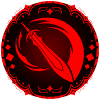
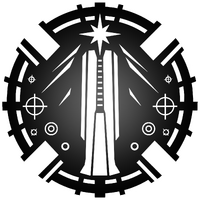
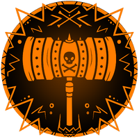
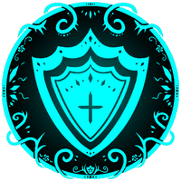
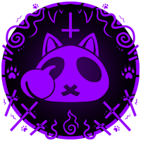

职业
Classes（职业）
职业是你开始游玩 Ecliptica 时的第一个选择。目前共有 8 个职业可选。
每个职业都有独特的战斗能力、HP 数值和闪避动作，帮助你形成自己的打法。
点击职业图标可以了解各职业的更多信息。
| 职业 | 简短说明 |
|---|---|
 Spellsword |
灵活的近中距离战士，可以在战斗中快速切入和脱离。 |
| Twinmage | 多功能的双元素使用者，专精于施加状态异常。 |
 Gunmancer |
强力远程射手，重视高额伤害。 |
| Fistmage | 厚实的近战狂战士，可以招架来袭伤害。 |
 Spellhammer |
灵巧而耐打的战士，能打出快速且沉重的攻击。 |
 Shield Mage |
前线防御者，可以格挡来袭攻击。 |
| Thaumaturge | 治疗者，可以把造成的伤害转化为队友的生命。 |
 Nekomancer |
召唤师，指挥一群不死猫。 |